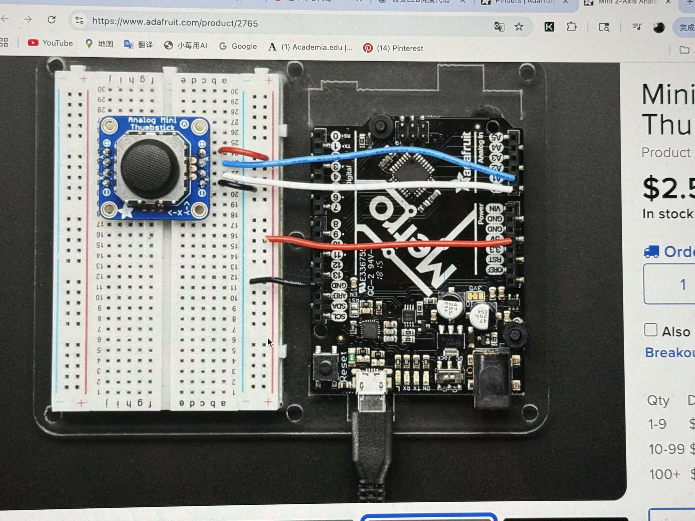
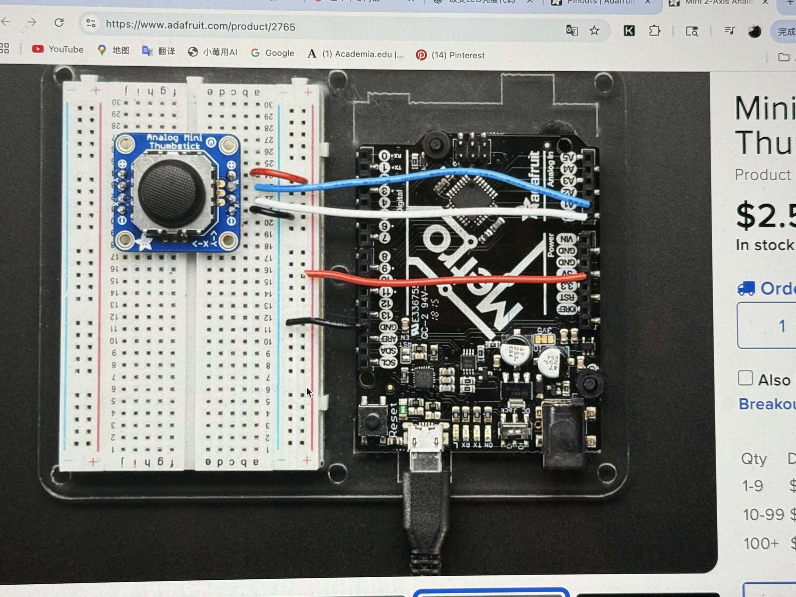
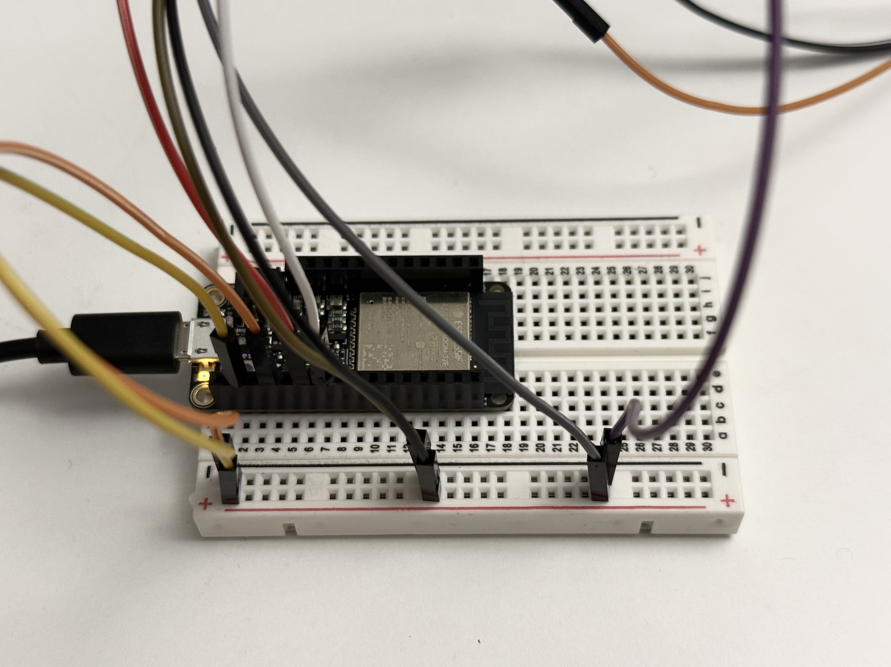
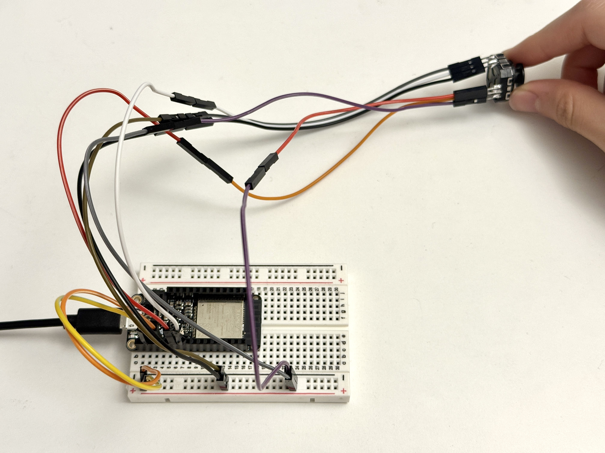
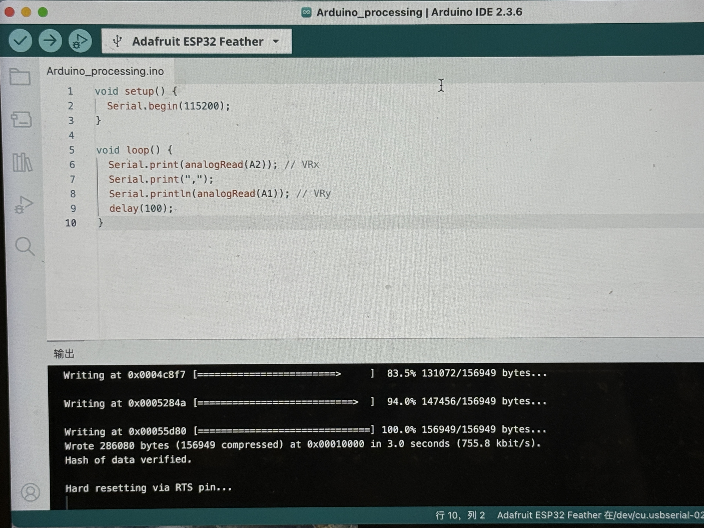
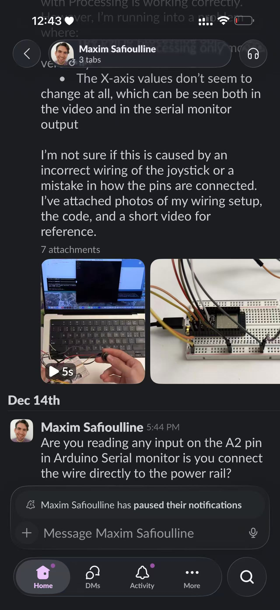
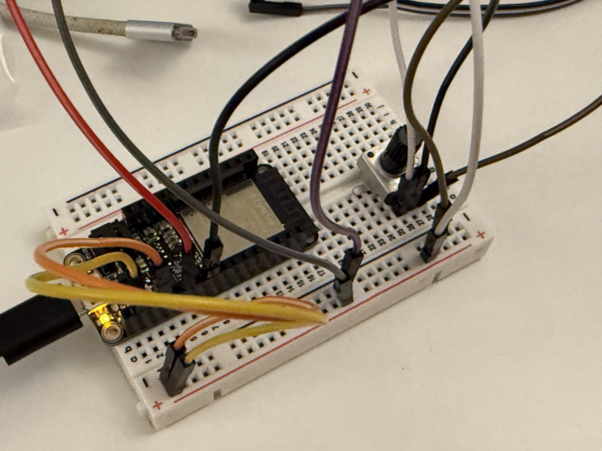
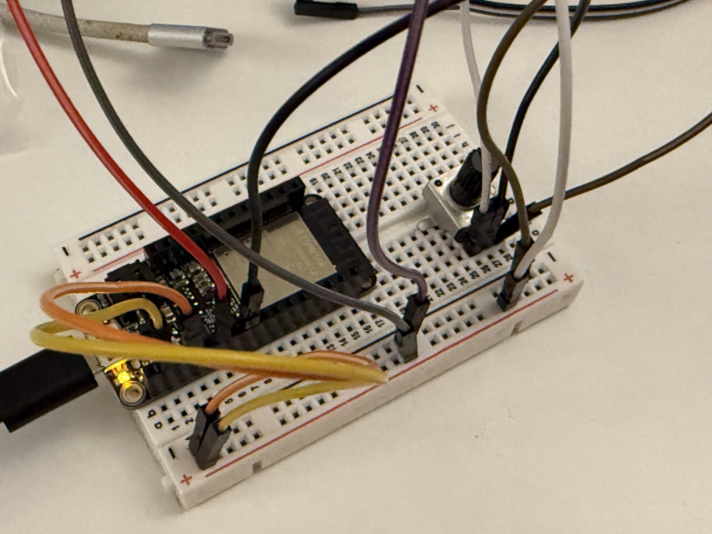

1. Based on the controller we learned in class last week, I first rebuilt the circuit and tried using a joystick as the sensor for this assignment.

2. I find a tutorial on YouTube
However, this tutorial seems different from the microcontroller I‘m using. I’m not sure which pins to connect, and after following the code and wiring shown in the video, I found that the Arduino did not show any change in values.
 

3. I connected the left and front pins of the joystick to the power and ground respectively, with the signal pins connected as follows: the X-axis to A1 and the Y-axis to A2. However, for some reason, the ball in Processing moves at a strange angle

4. Found the cause of the problem!
I was planning to ask the instructor on Slack, but I noticed that several classmates were experiencing the same issue. Since the instructor hadn’t replied, I decided to ask directly in class on Friday. When the Finstructor took a look, he said the joystick couldn’t be used because its signal pin was very loose and needed to be re-soldered. So after class, we went to the maker lab together and did the soldering work 🧑🏭

5. Tried reconnecting it…
  6. The X-axis isn’t registering any connection.

7. I asked Maxim again… but I confirmed that my pin is indeed A2 and tried several times, so I decided to change my approach.
8. I switched to using a potentiometer and fixed the ball in the center in Processing. My idea was to use the potentiometer to control the ball’s size and the joystick to control its vertical position—and it worked quickly. I’m guessing maybe the joystick just can’t connect properly ().
 

code